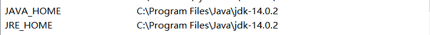
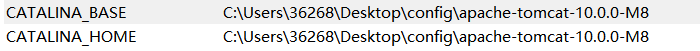
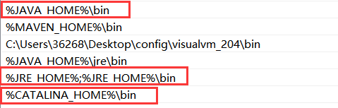
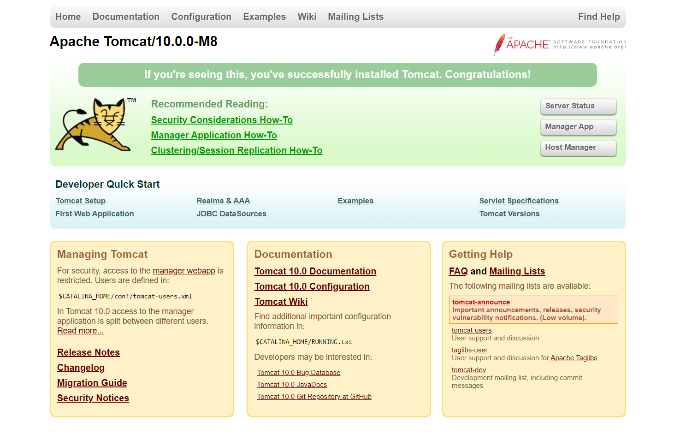

最近因为某些原因需要使用Java，但是遇到了一些问题(Tomcat闪退)我使用的环境是JDK14.0 + Tomcat10;
看了很多博客都没有解决我这个闪退的问题，导致闪退问题的原因很多，我总结了网上的博客以及自己的问题:
JDK配置不正确
- JAVA_HOME后边加了\符号
- JRE_HOME配置不正确
- Path环境变量配置
Tomcat服务
- Tomcat安装服务
- startup和shutdown
JDK版本大于9.0
- JDK9.0之后模块化了，不再区分JVM，JRE，JDK了。
JDK版本大于9.0
日常软件开发中，经常会配置一些环境变量。我很少犯过一些环境变量的错误，啊，Java可太折磨人了！！！(.NET Core大法好)
安装Tomcat之后打开startup.bat闪退，查找了一些相关资料、博客，它们都指出是JDK的环境变量配置导致这一后果，可是我反复检查都没有发现错误。
后来看到知乎有人发的一篇帖子才恍然大悟，JDK9.0之后没有了JRE的概念了，通过查资料也可以得到JRE目前只有8的版本，JDK9之后你可以使用Jlink定制属于自己的Java Runtime也就是JRE，不扯远……，最简单的解决方案就是JRE_HOME与JAVA_HOME同样也写成JDK所在路径。
配置:
1 | JAVA_HOME C:\Program Files\Java\jdk-14.0.2 |
记得这里不能加\号因为这个配置最终会和环境变量中的变量相拼接，如：这里假设为XXX\JDK\而Path为\bin 拼接结果就是XXX\JDK\\bin这肯定是不正确的。

运行Tomcat还需要以下配置:
1 | CATALINA_BASE C:\Users\36268\Desktop\config\apache-tomcat-10.0.0-M8 |

将以上这些配置路径修改为自己的实际安装路径即可
配置Path环境变量:

找到Tomcat安装路径下的bin目录下
打开终端窗口，执行以下命令：
1 | service.bat install Tomcat10 |
startup.bat与shutdown.bat是启动和关闭Tomcat的脚本。当然也可以使用Tomcat10.exe打开或者打开Tomcat10w.exe中的startup或catalina run命令运行。
完成以上步骤双击打开stratup.bat或在终端输入startup.bat回车运行，打开浏览器输入localhost:8080打开以下页面。

想要关闭startup要运行shutdown.bat，运行shutdown.bat会关闭后台进程，非正常关闭会导致后台进程依旧存活，导致下一次打开Tomcat时因为原有进程存在，而无法打开Tomcat的情况